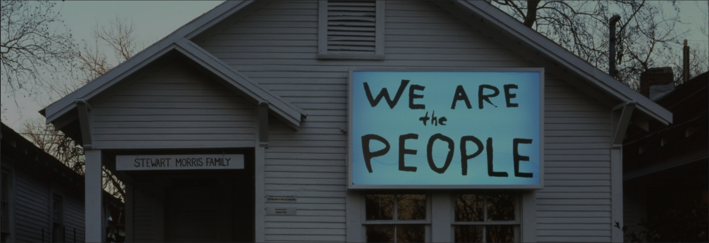

Make giving easier to find.
We explored how visitors could move from learning about the mission toward finding a donation opportunity, with fewer unclear navigation choices.
LEARN→FIND DONATE→CONTINUE
Art connects people.
Good navigation should too.
3-PERSON TEAM / WEBSITE REDESIGN CONCEPT
A collaborative UX/UI concept exploring how a Houston arts nonprofit's website could help visitors understand its mission and find ways to participate. A clearer experience, without losing sight of the community it serves.
Explore the story ↓Project Row Houses is rooted in Houston's Third Ward. Understanding the people and mission behind the organization gave our website concept a meaningful context.
Location photograph: Hourick, 2012, Wikimedia Commons, CC BY 3.0. Historic context photo, not part of the UX redesign or taken by me.
 VIEW SOURCE PHOTO ↗
VIEW SOURCE PHOTO ↗Visual material preserved from my earlier portfolio. These are original project-related assets, not newly invented screens or official redesigns adopted by the organization.


Source: visual assets preserved in the original portfolio repository. The project's historical source files are retained unchanged.
How might we help visitors understand Project Row Houses' mission and find clearer ways to donate or volunteer? In our review of the site's navigation, important routes took more searching than they should.
Our team reviewed the existing website, conducted user interviews, and collected survey responses to understand how people navigate nonprofit sites and decide whether to get involved.
These are research activity counts, not measures of website performance.
We mapped journeys around donating and volunteering, compared related websites, and prioritized changes using the MoSCoW method. The pathways below are simplified editorial explanations of our focus, not screenshots of the original prototypes.
We explored how visitors could move from learning about the mission toward finding a donation opportunity, with fewer unclear navigation choices.
We looked at how volunteer information could become easier to locate and understand instead of getting buried in other content.
Illustrative diagrams only. These do not claim working or deployed user flows.
We reviewed how navigation surfaced programs, donations, and volunteering, and identified paths that demanded extra searching.
We compared nonprofit websites, mapped key journeys, and prioritized what to address using the MoSCoW method.
We explored low-fidelity layouts before a more detailed prototype, revisiting calls to action, hierarchy, and whitespace after feedback.
Prototype testing suggested clearer paths to the mission, donating, and volunteering. But some broken paths remained, and responsive behavior was not fully tested. This was a design concept, not a launched production site.
Explore the original project case study ↗ for its archived materials.